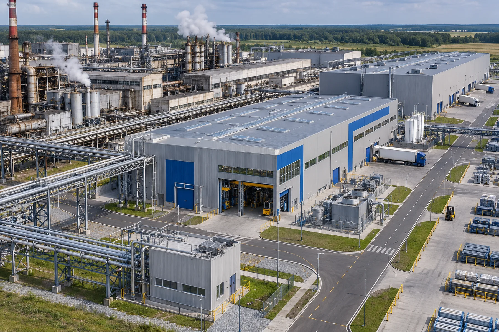
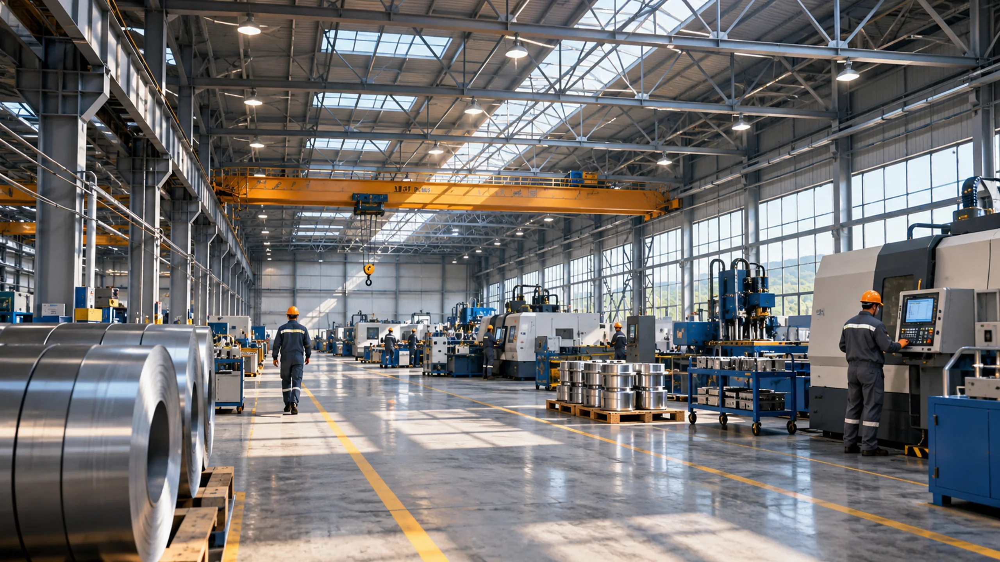
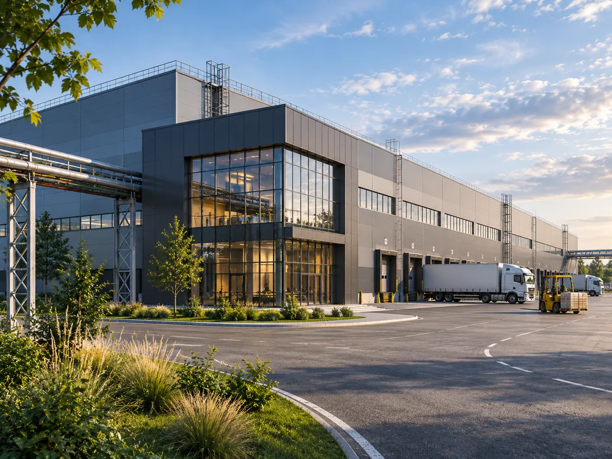
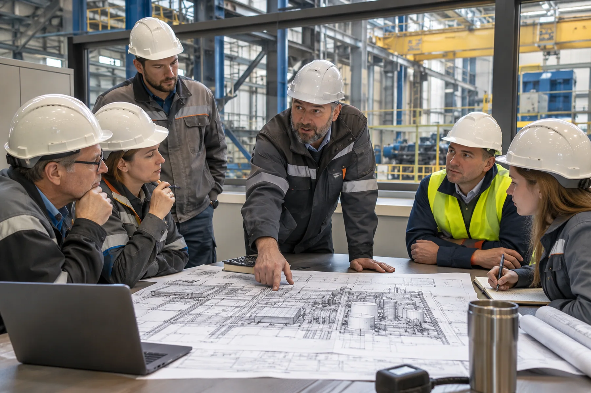

Производственные объекты
Промышленные здания, корпуса и расширение производственных мощностей.

Производственные корпуса, складская инфраструктура и комплексные строительные задачи. Объединяем профильные компетенции под параметры конкретного объекта.
Что входит в направление
От нового производственного корпуса до модернизации действующей площадки — состав работ определяется после изучения документации.

Промышленные здания, корпуса и расширение производственных мощностей.

Складская инфраструктура, организация потоков и инженерных зон.

Подготовка территории и координация строительства с учётом действующей инфраструктуры.
Подход к реализации
Проект начинается с понимания технологической задачи и ограничений площадки.
Понятный порядок работы
Площадка, назначение, документация, сроки и бюджетный ориентир.
Уточняем состав работ, исполнителей и необходимые согласования.
Определяем этапы и условия дальнейшей проработки.
Корпус с грузовыми воротами, административной зоной и транспортными подъездами
Опиши задачу, регион и текущую стадию проекта. Контакт напрямую с представителем МосПромСтроя.